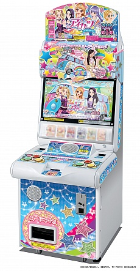
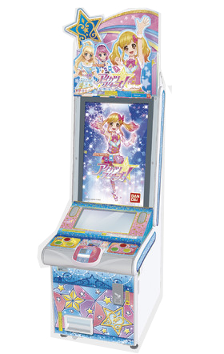

こんにちは、アイカツおじさんです。
おもしろいですよねぇ～アイカツ！
アニメもさることながら、筐体の最高オブ最高でラララ～って感じです。
ところで、わたくしオリハラはアイカツスターズ！の筐体はやったことあれど、アイカツの筐体をやったことがないのです…。
これがアイカツ筐体。
こっちがアイカツスターズ筐体。
どっちもめっちゃデザインかわいい(素)
大きな違いといえば
・画面サイズ
・タッチパネルの追加
・カードの排出方式
・曲と使用キャラ
ですかね。
ここで注目しておきたいのは３つ目と４つ目。
カードの排出方式とは、元々用意されていたカードから印刷方式に変更されたということです。
個人的には前の排出方法のほうが好みだった…。
生カードのほうが良さみが深い。
無印の曲とキャラって今の筐体ではプレイできないのですよ。
これは死活問題で筐体での演出やアニメ再現などができない。
…ほんと恥ずかしくて筐体なんてプレイできな～い♡って言ってた頃の自分を呪いたい。
一応3DSでもできるのですが、曲数が少なかったり難易度最大がなかったり画面が小さかったり…。
とどのつまり満足できないってやつです。
そこで僕は思いました。
…ないなら作ってしまえばいい！
これもまたアイカツ！なのでは…！
早速考えたのはすべてを1から再現するということ。
3DCGのモデリング、曲の編集、システム構築、機器の接続…etc.
...無理。
無理ですよね～。
もし僕がスーパーハイスペック行動派オタクだったらやってるかもですけど、僕はただの救いのない限界オタクですからね。
そこで最も現実的で個人レベルで実現可能な方法を考えました。
それは3DSを改造して筐体っぽくしてしまおうという作戦。
…怒られそう。
準備が整い次第追記します。。。